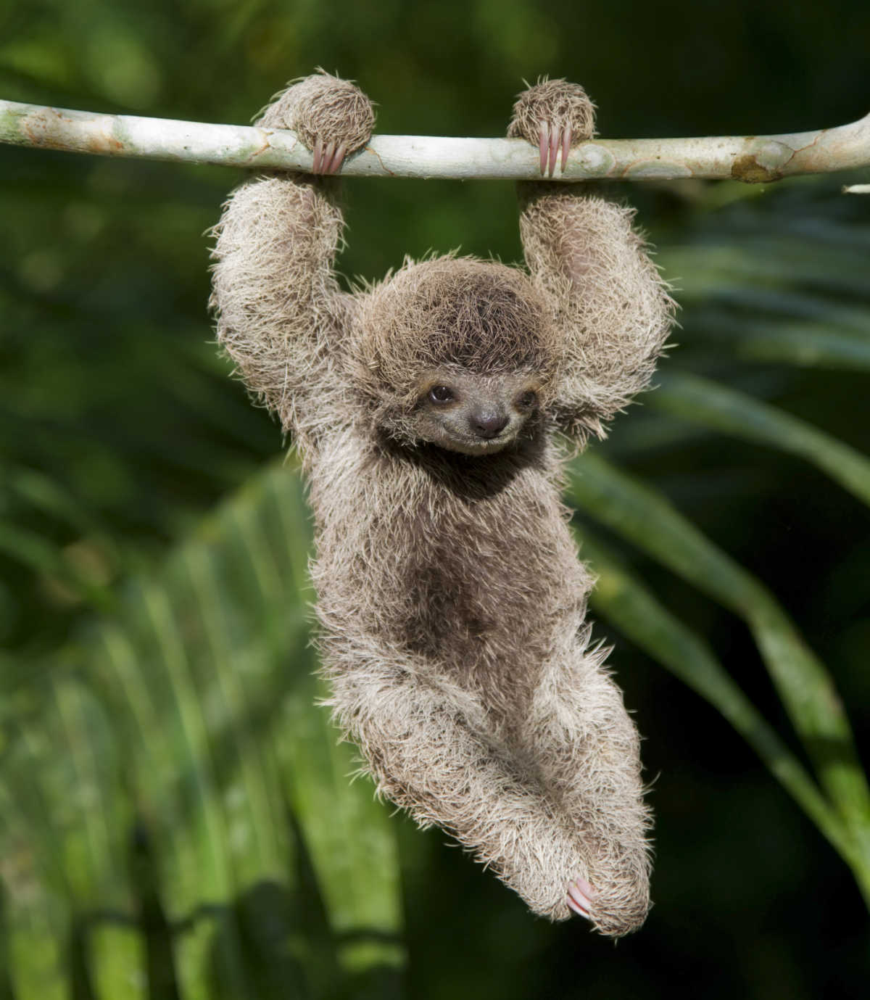
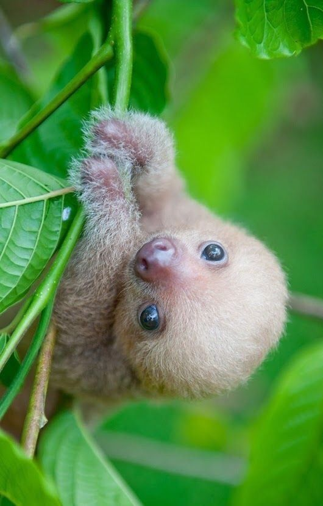

Joe
Imagine if you had the name
Joe
Joe


Types of Sloths
- Pygmy three-toed sloth
- Maned sloth
- Pale-throated sloth
- Brown-throated sloth
- Linnaeus’s two-toed sloth
- Hoffman’s two-toed sloth
Reasons to like sloths
- They are the most chill animal
- They are adorable
- They do nothing but good for the environment because all they eat are leaves
- They are so slow that they can have moss grow on them
Epic Sloth Videos
- The extreme life of a sloth
- Single Swimming Sloth Looking for Love - Planet Earth II - BBC America
- Lady Cries While Holding Sloth
Sloths Predators
- Big Cats
- Jaguars
- Ocelots
- Sloths defend themselves with their claws
- Birds of Prey
- Harpy Eagles
- Sloths defend themselves with camoflauge
- Snakes
- Anocandas
- If needed Sloths can defend themselves with their claws